Favorite garments 2021
Insulation
Moutain hardwear ghost whisper 350
Good fit.
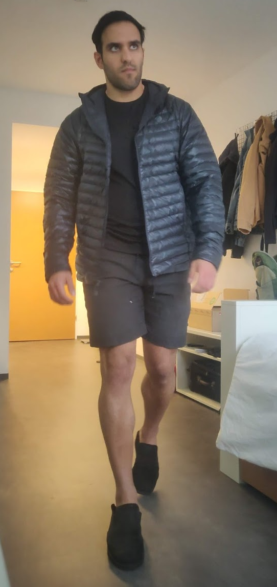Cumulus inverse 230
Lightweight down jacket. Down is a natural fabric and from my heuristic of favoring natural over synthetic, this is the best option.
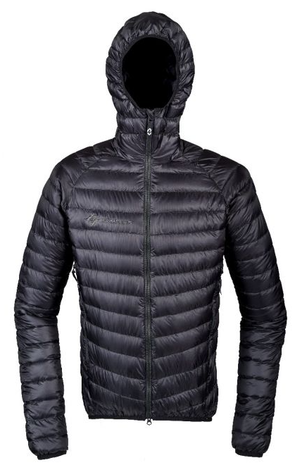Arc'teryx Proton LT 250
Best combination of style, quality, warmth and breathability. This is a synthetic insulation for high output activities.
Good as midlayer during bike commuting, skiing, walking in the city. Also good for standalone jacket when it's not too cold, which means it can be used year-round.
I think down is better because it's natural, more durable, packs smaller.
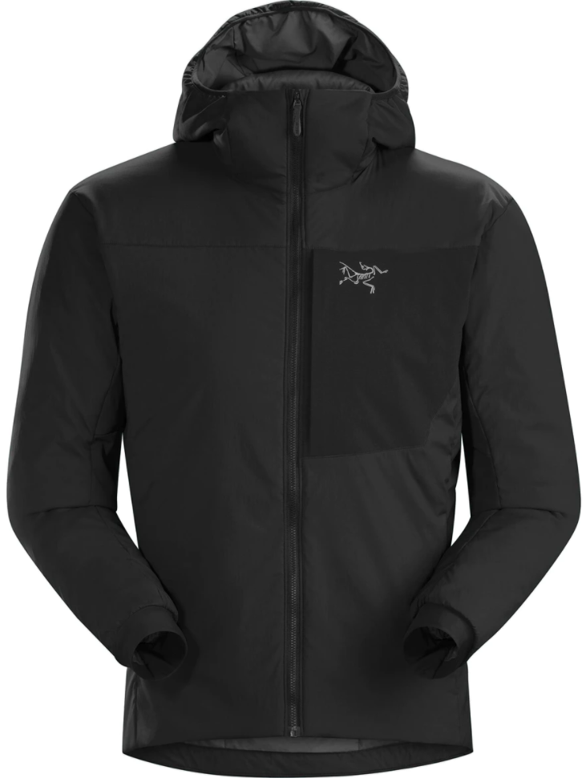Patagonia Nano air 250
Second option. People usually complain about durability of face fabric.
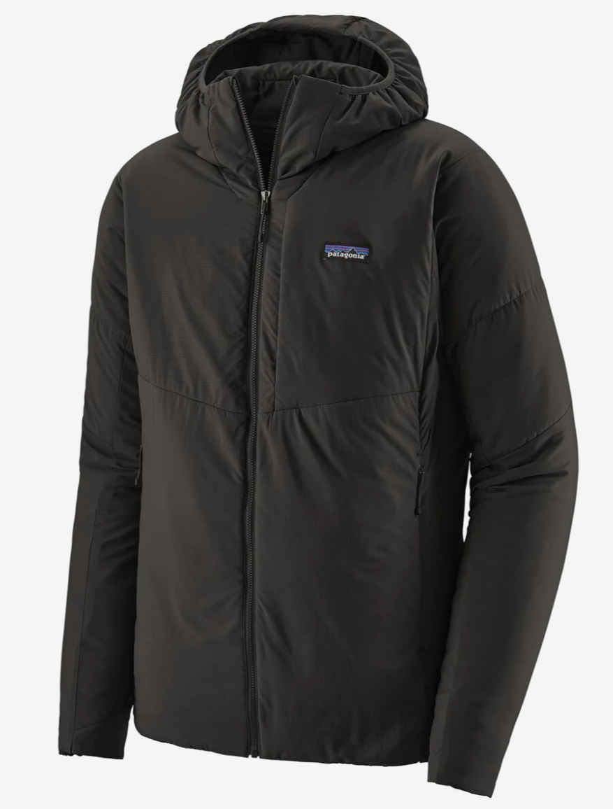Cumulus Climalite 175
The price is good, but it lacks style.
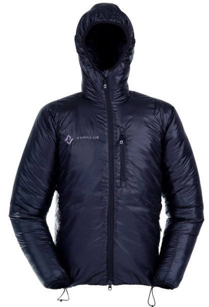Enlightened Equipament torrid APEX 142,21
More for US customers. Same as the cumulus, very technical and lacks style.
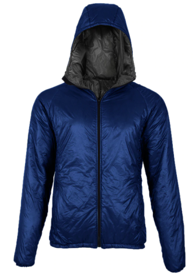Houdini heavenly 280
Primaloft gold active. Light weight shell, good to every thing.
This is an alternative to proton lt. Breathable synthetic midlayer.
But I prefer the cumulus light weight down.
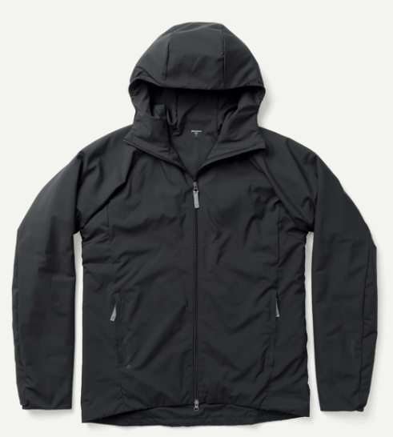Fjalraven 300
Too warm and bulky for mid layer. Fit is loose also, sleeves are too long.
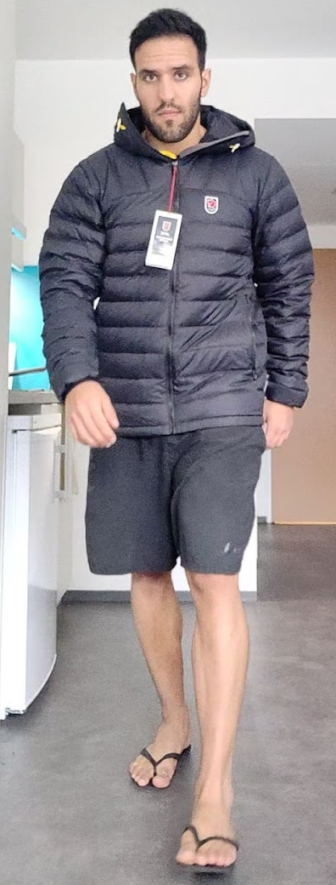Hard shell
Arc'teryx BETA LT 400
3L Gore-TEX versatile. With pit zippers and adjustable hood.
This is one of the most versitile Gore-TEX jacket.
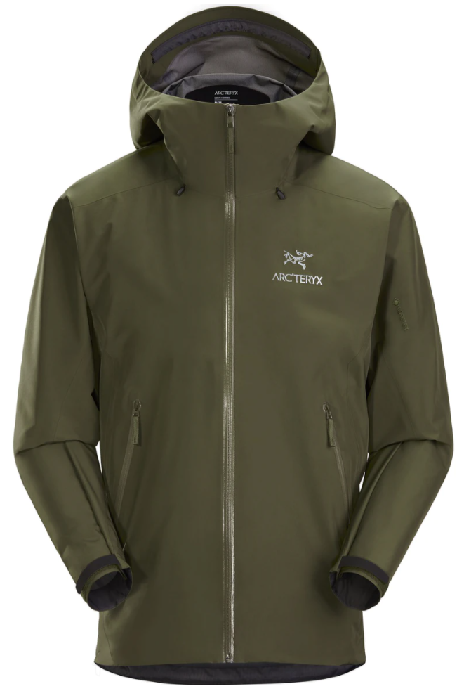Houdini RollerCoaster
Made out of Loop Hardshell, allegedly quiet fabric. Minimalist design with a nice beige color. It does not stretch but it is made with a single piece of fabric draped over the body, which supposedly allows mode freedom of movement.
It has a build in snow gaiter, which may reduce flexibility of the garment in other use cases.
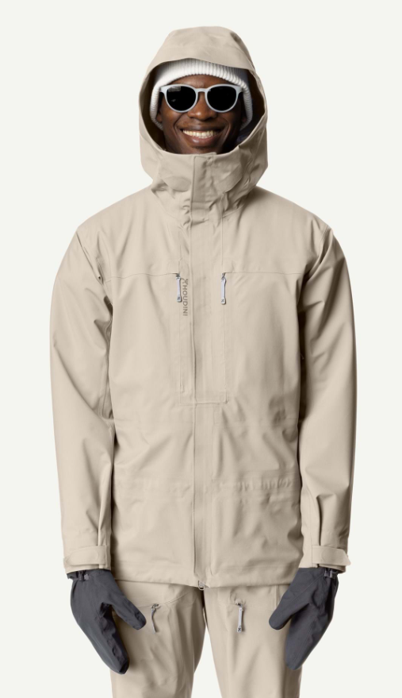 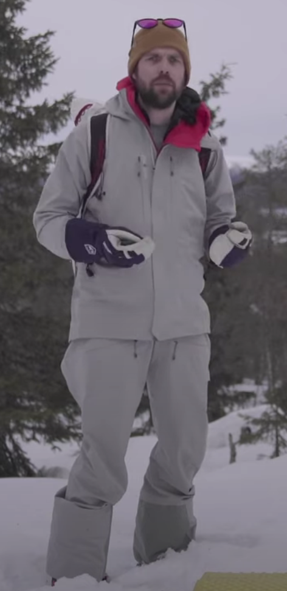Houdini Leeward 470
Loop Hardshell fabric and Atmos membrane. This fabric is has "mechanical stretch", no spandex. It has a smooth and silent face.
4-seasons jacket that can be used for skiing but is lightweight for hiking as well.
Made in Estonia.
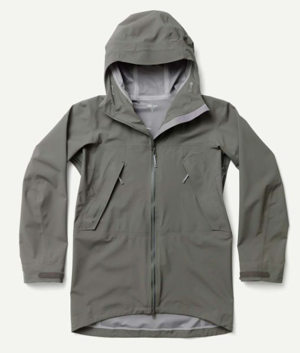Houdini D 500
The alternative to the Beta LT is the D jacket.
Difference is that the D jacket is not Gore-TEX. It has a Atmos membrane instead.
The main fabric is Apex 3 layers which is smooth, and friction free inside. No stretch like the Leeward.
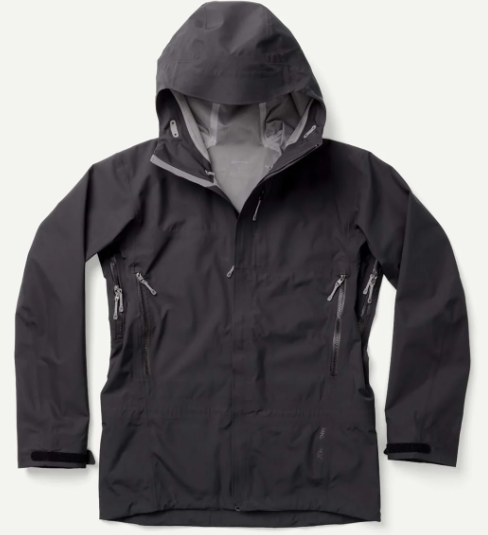Norrøna Lofoten 550
This one is good for skiing and everything else. However, I think the style is too focused in skiing, its too long.
It is made with Gore-Tex 3-layer, pit zips. The yellow color stands out and grows on you.
This jacket was first designed in 2001, which is a long time to improve and perfect its design.
The main difference from the Beta LT is the fit, this one is more boxy and relaxed which is adequate for skiing environment. I would say it performs better when biking as well. The arcteryx fit is nicer when just walking around.
It has a powderskirt accessory which adds versatility.
I have seen for 380.
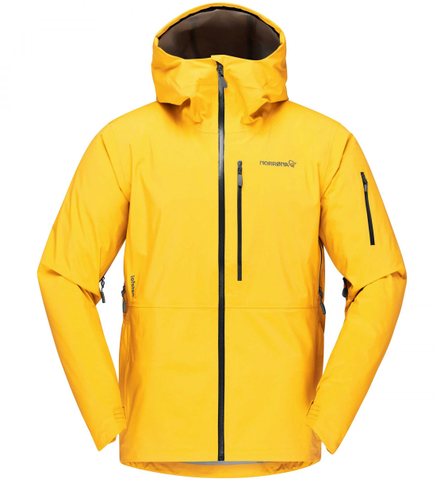Rab Firewall 300
Pertex shield 3L, not gore-tex but equivalent. It can stretches and have pít zips for ventilation. Already found it for 190. (campz.at)
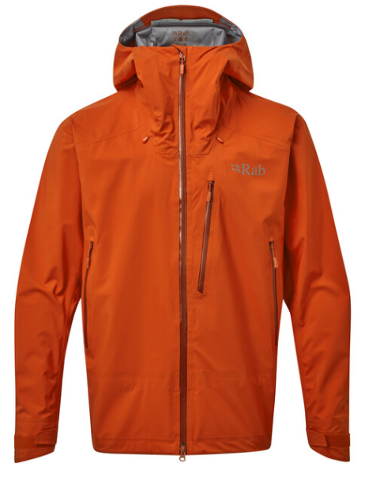Soft shell
Mostly for running or as a mid layer. Should be black or orange.
RAB Borealis 90
Best option for running considering quality/price ratio.
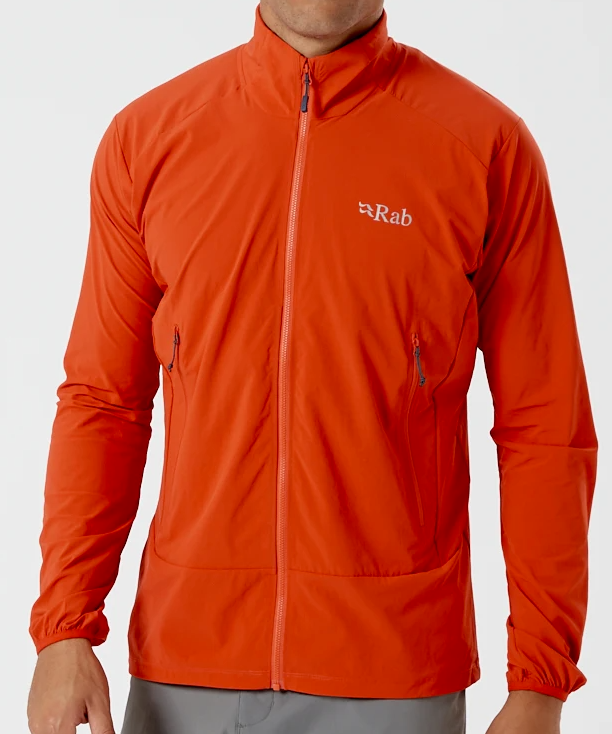Rab Kinectic Plus 200
Proflex membrane is waterproof and stretchy. It is also decently breathable.
Good for running and cycling around the city. Contrasting to the Borealis, this one is more waterproof but less breatheable. Not so much for skiing.
Worth only if on sale. I have seen it for 120 (campz.at)
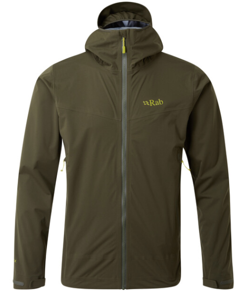Gore H5 Windstopper 350
Already have seen for 160 (campz.at).
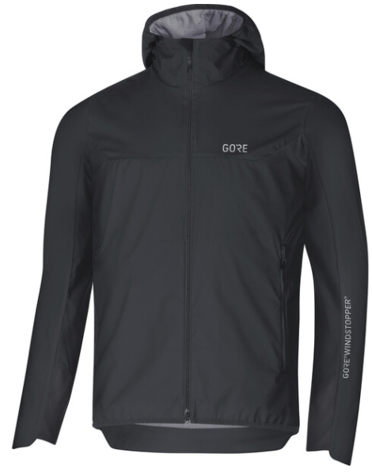Pants
Houdini Angular 500
Same material as the leeward jacket, Loop hard shell with mechanical stretch.
I have seen it for 250 already.
Houdini RollerCoaster
Gloves
Hestra Army leather Heli ski 135
Classic (yet modern). I think this is the most popular style.
Goat leather palm for water resistance (not waterproof). Nylon on the back.
Removable liner will make this last for a long time. (I estimate a decade minimum for moderate usage).
Gauntlet style over elastic cuff makes it easier to go over the jacket sleeve. This makes it easier to put them on and off.
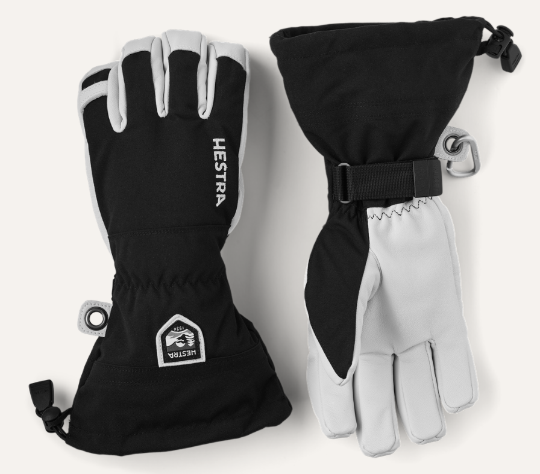 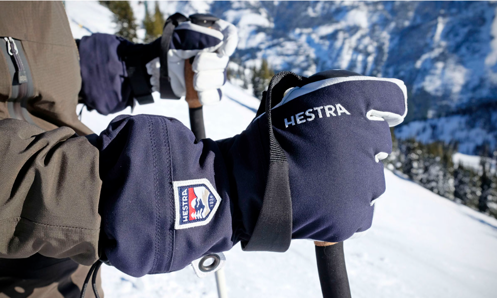 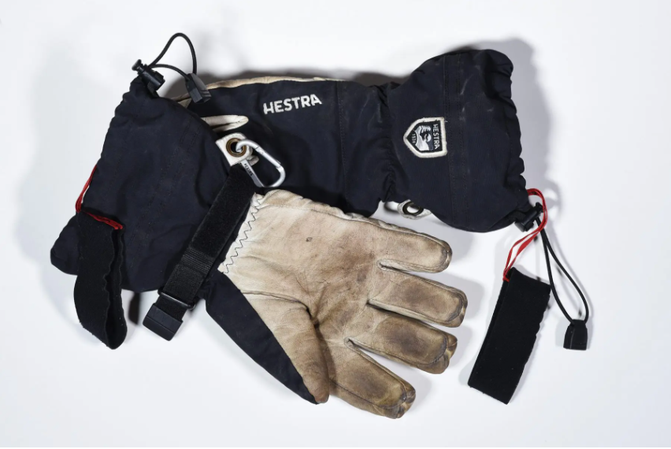 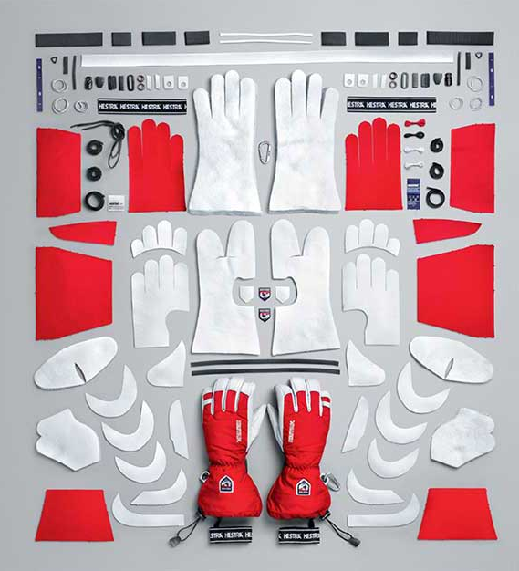Norrona Lofoten 180
My favorite one because it combines performance with clean design.
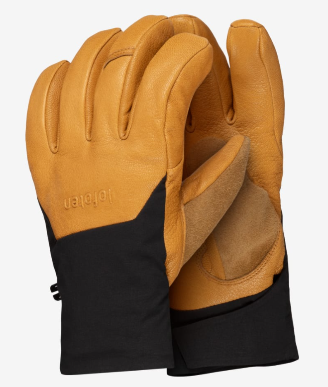Hestra Army leather soft shell 110
Similar to the Army leather but with a more clean stitching.
Water and wind proof.
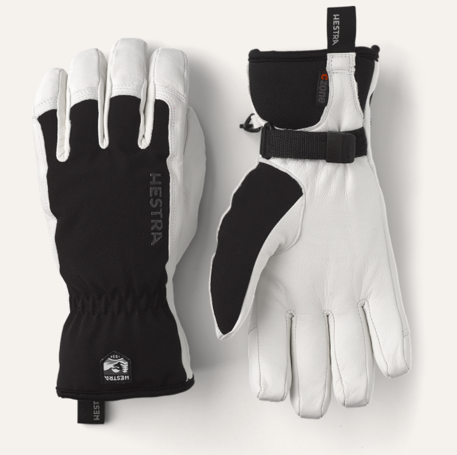Hestra Army leather patrol 110
The best and most afordable option.
Goat leather palm, insulated and with removable linig. The backhand has a windproof and water-resistant layer. It does not have Gore-Tex, which means it is more breathable.
Very versatile glove, can be used for cycling and skiing. It seems to be very durable and will last a long time, specially with option to change the lining in the future.
It can also be used in a layer system. If more warm is required, an thin wool layer can be added underneath. If waterproof is important, a mitten shell can be added.
I don't like the stitching in the outside. It might provide some benefits but it does not look good.
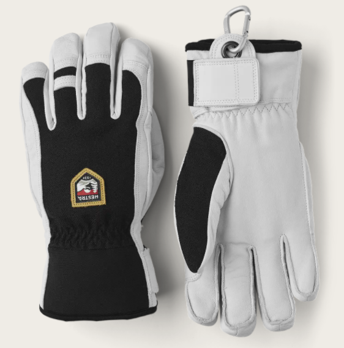Hestra Fall line 140
The design is too noisy, but is a good option with performance and durability in mind.
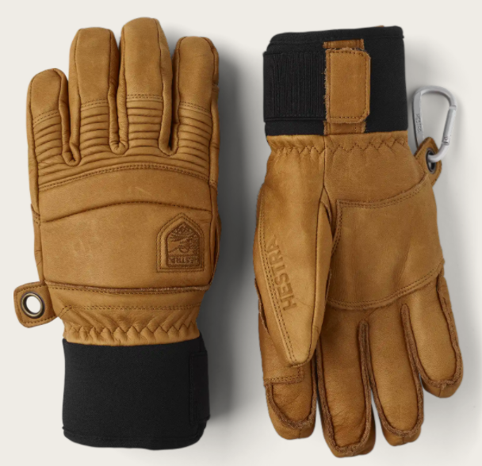Hestra FÄLT 135
This is more for hiking, I do not like the loose wrist cover. Prefer it under the jacket.
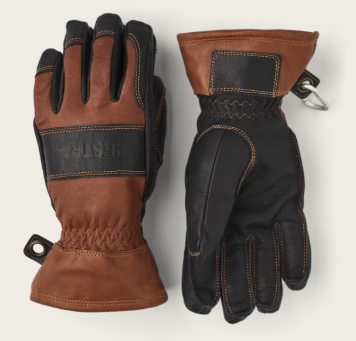Mittens or gloves?
Gloves are more versatile since they can be used more easily for bike riding and walking in the city. So you can take a picture with your phone with gloves on. You can do or undo your zippers more easily as well. While ridding a bike it is easier to use the brakes with gloves.
Mittens can keep the heat better, but I think gloves with an extra wool liner are enough for most of the time.
Base layer
All good options, get the one on sale. Black or orange for consistency.
Karrimor quarter zip 15
Cheapest one, still waiting to check quality. Update: I tested the t-shirt. The quality is ok, good enough to run with.
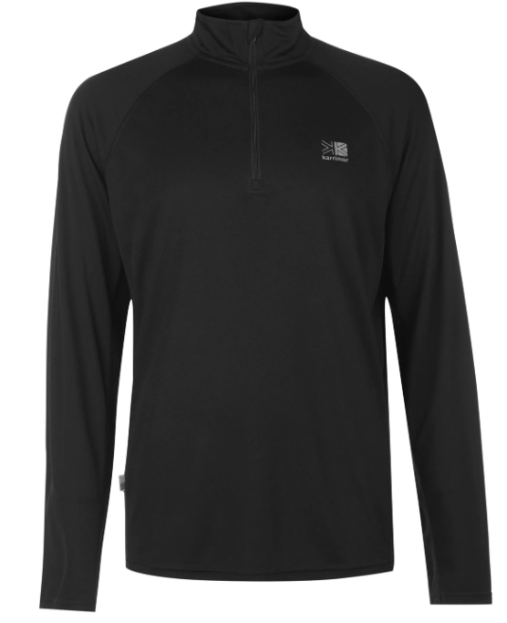Craft CORE gain 35
Nike pacer 1/2 zip 40
Insulated shell
For wandering around the city and you don't want be like an onion with multiple layers. Commuting to a warm place (restaurant or bar) and you are not expecting rain.
Black is the most versatile.
Rab Axion Pro 270
Already have seen for 160 (bergzeit.de).
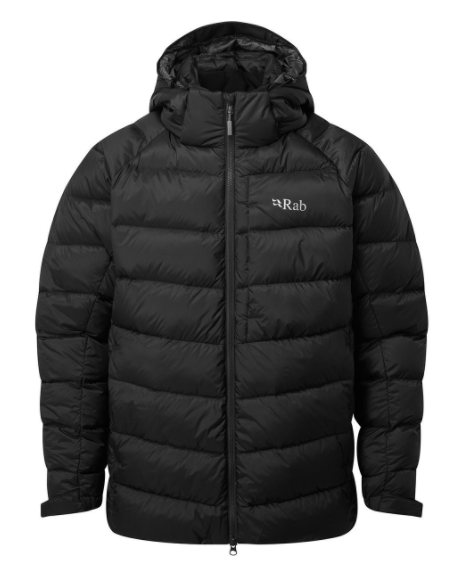Arcteryx Atom AR
Technologies
Gore-Tex Pro
Best in terms of breathable waterproof. It provides 28 meters of water head hight resistance.
Air permeable membranes
When classic Gore-Tex patent expired in 1997, other manufactures used a single layer ePTFE membrane (expanded polytetrafluoroethylene, "teflon").
This single layers have constant air flow through them, whereas Gore-Tex is monolithic.